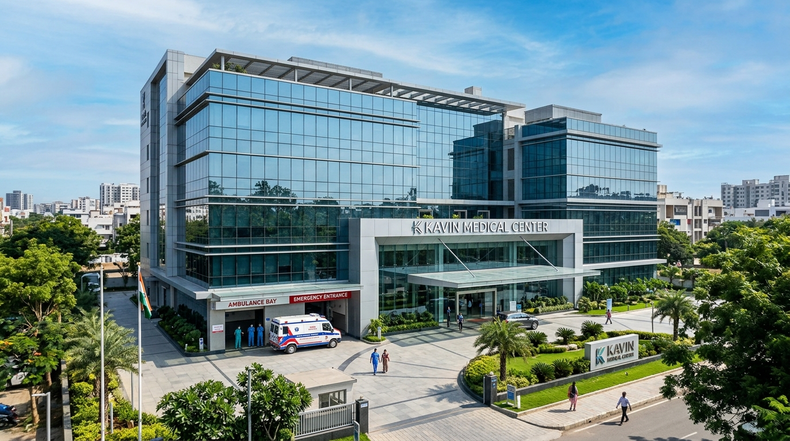
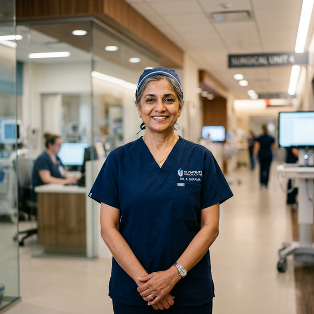
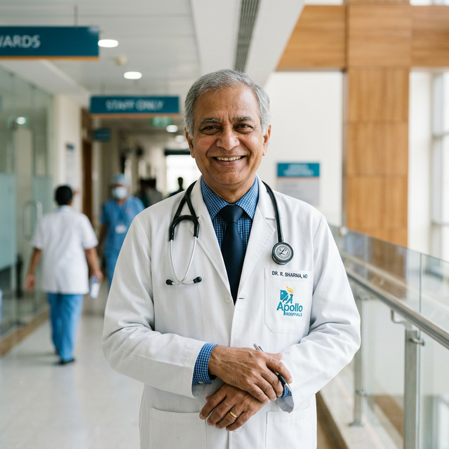
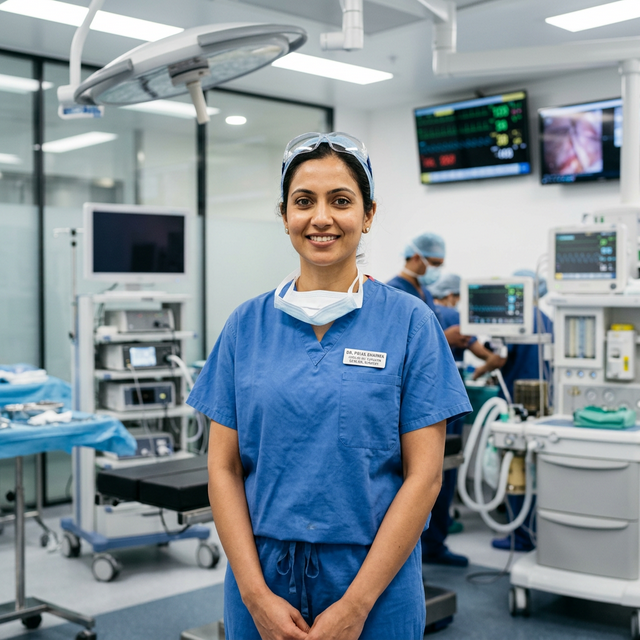

Your Health & Wellbeing,
Our Utmost Priority.
Welcome to Kavin Medical Center, Erode — A center of medical distinction offering super-specialized Plastic & Cosmetic Surgery, Dedicated Burn Care, Hand Trauma, General & Laparoscopic Care, and 24/7 Critical Emergency response.

24/7 Emergency Bay
Ambulance & Trauma Support
25+
Years Surgical MasteryClinical Excellence
15k+
Happy RecoveriesTreated Patients
8+
Specialty DepartmentsModern Disciplines
24/7
Emergency & ICURound-the-clock Care
A Beacon of Advanced Healthcare & Super-Specialty Surgery in Erode
Kavin Medical Center is an advanced multispecialty healthcare landmark situated conveniently on Perundurai Road in Gandhi Nagar, Erode.
Headed by renowned Medical Director Dr. G. I. Nambi (M.S., M.Ch.), our hospital is widely acclaimed across Western Tamil Nadu for complex reconstructive plastic surgery, dedicated acute burn rehabilitation, microvascular hand trauma surgery, laparoscopic operations, diabetic foot salvage, and comprehensive round-the-clock emergency medical response.
- Premier Reconstructive & Burn Care Center
- Advanced Modular Laminar Flow OTs
- High-Dependency ICU & Critical Trauma Team
- Dedicated Diabetic Foot Ulcer Salvage Clinic
- 24/7 In-House Pharmacy & Diagnostics
- Compassionate bilingual patient care
Strategic Location in Erode
68, Gandhi Nagar, Erode to Perundurai Main Road, Erode — 638011 (Easy highway accessibility).
OPD & Emergency Timings
Outpatient Consultations: Mon – Sun: 8:00 AM – 7:00 PM
Emergency: 24 Hours / 7 Days Open
Patient Trust & Excellence
Rated 4.9 / 5 by thousands of families across Erode, Salem, Namakkal, and Coimbatore districts.
Specialized Clinical Departments
Comprehensive multispecialty healthcare with super-specialized surgical excellence.
Plastic & Cosmetic Surgery
Aesthetic & Reconstructive Care
Aesthetic procedures, scar revision, facial reconstruction, and advanced cosmetic treatments.
Specialized Burn Care Center
Acute Burn Recovery
Specialized acute burn management, skin grafting, post-burn contracture release & holistic rehabilitation.
Hand & Microvascular Surgery
Precision Trauma Care
Hand injuries, tendon repair, nerve reconstructive surgery, and replantation procedures.
General & Laparoscopic Surgery
Advanced Keyhole Procedures
Advanced keyhole surgeries, hernia repair, gallbladder surgery, appendectomy, and gastrointestinal care.
Diabetic Foot & Vascular Care
Wound & Vascular Clinic
Diabetic foot ulcer management, preventive limb salvage, vascular repair, and chronic wound healing.
Emergency & Trauma Critical Care
Rapid Response Center
Rapid emergency resuscitation, trauma care, 24/7 ambulance support, and immediate physician attention.
ICU & In-Patient Healthcare
Critical Care Unit
State-of-the-art multi-parameter monitors, ventilators, aseptic wards, and private recovery suites.
Diagnostic Lab & Digital X-Ray
Fast Accurate Reports
Comprehensive pathology, hematology, biochemistry, and computerized digital radiography.
Meet Our Leading Medical Specialists
Highly qualified and experienced surgeons and physicians committed to ethical patient care.
Dr. G. I. Nambi
M.S., M.Ch. (Plastic Surgery)
Medical Director, Chief Plastic & Burn Surgeon

18+ Years ExpDr. J. Vidhya Devi
MBBS, DGO, MS
Senior Consultant Specialist

16+ Years ExpDr. P. Arun Mozhi
MBBS, MD / DNB
Consultant Specialist & Critical Care

12+ Years ExpDr. P. Ajith Swaminath
MBBS, MS (General Surgery)
Consultant General & Laparoscopic Surgeon
World-Class Healthcare Infrastructure
Engineered for clinical precision, infection control, and patient comfort.
Specialized Burn ICU
Sterile temperature-controlled burn treatment cubicles to prevent secondary infection.
Modular Operation Theatres
Laminar airflow OTs equipped with advanced surgical microscopes and laparoscopic towers.
24/7 Intensive Care Unit
Full ventilator support, advanced telemetry monitors, and dedicated critical care nursing.
Digital X-Ray & Diagnostics
High-resolution low-radiation digital radiography with immediate physician review.
24/7 In-House Pharmacy
Comprehensive availability of genuine prescription surgical, burn care, and critical medicines.
In-Patient Wards & Suites
Hygienic general wards, semi-private rooms, and deluxe single air-conditioned recovery suites.
Book Your Doctor Consultation
Schedule your consultation with our specialist doctors at Kavin Medical Center. Our desk will confirm your appointment within 15 minutes.
Book Consultation Slot
Please fill out your details to schedule your visit
Visit Kavin Medical Center, Erode
Conveniently located on Erode–Perundurai Main Road with ample parking and direct emergency access.
Hospital Address
68, Gandhi Nagar, Erode to Perundurai Main Road, Erode — 638 011, Tamil Nadu, India
Telephone Numbers
Email Inquiry
Working Hours
OPD Consultations: Monday – Sunday (8:00 AM – 7:00 PM)
Emergency: 24/7 Always Open